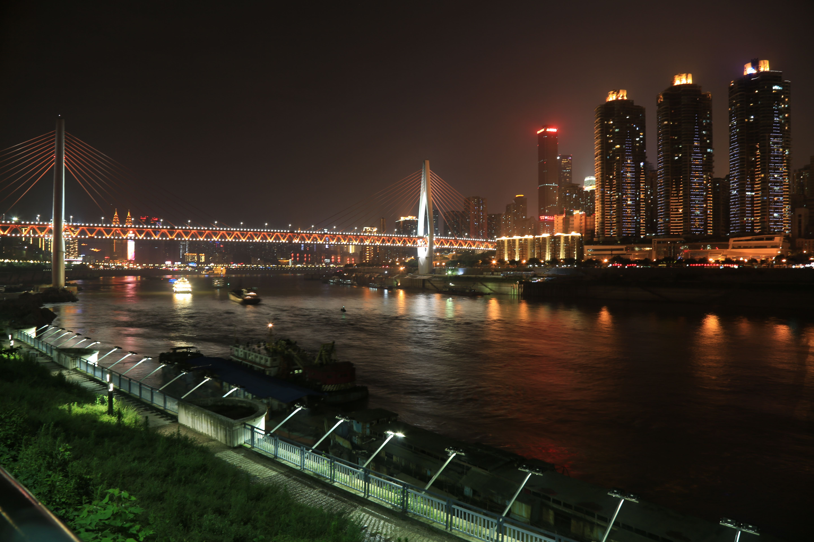

南滨路处于重庆市的中心地位，它北临长江，背依南山，可观最美渝中夜景；历史悠久的巴渝文化、宗教文化、开埠文化、大禹文化、码头文化、抗战遗址文化如珍珠般遍布沿线，使南滨路获得了“重庆外滩”的美誉。
南滨路旅游观光区全长25公里，占地16万平方米，是集防洪护岸、城市道路、旧城改造和餐饮、娱乐、休闲为一体的城市观光休闲景观大道。
截止至2013年05月，南滨路上规划、在建和已建的桥梁有七座。南滨路一共规划了17条配套公路。这17条道路建成后，将形成完善的循环式道路网络，改善南滨路和南岸区的交通条件。
南滨路除了举办各式各样的美食节、具有重庆特色的火锅节，还举办充满时尚文化气息的大型活动，如2005年亚太市长峰会焰火晚会、中法文化年图卢兹文化节、沙雕节，2007迎春灯会、重庆市第十一届山水都市旅游节、山城啤酒节、英伦艺术节等等。
南岸区政府计划在鹅公岩大桥哑巴洞段建滨江郊野公园，规划面积达73万平方米。南滨路大佛寺段，将会矗立起一个直径为90米的彩色大球，它是专门为重庆杂技团修建的国际马戏城，计划2014年底开门迎宾。